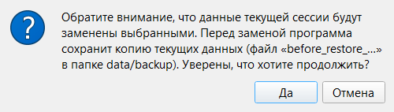

Раздел 14. Резервные копии и восстановление |
Программа сама сохраняет копии базы, и из любой из них можно вернуть данные: после ошибочного удаления, неудачной правки или повреждения файла.
Автоматические копии |
data\backup рядом с программой.backup_ГГГГММДД-ЧЧММСС.db.|
🍎 macOS: Папка по умолчанию — |
В папке лежат и копии, которые программа делает в особых случаях:
| Файл | Когда создаётся | Удаляется сам |
|---|---|---|
backup_… |
При запуске программы | Да |
before_sync_… |
Перед тем, как программа заменила локальную копию общей базой с изменениями другого пользователя (раздел 15) | Да |
before_restore_… |
Перед восстановлением из копии в «Настройки» → «Хранение». В копии текущие данные | Да |
conflict_… |
Перед автообъединением, перед выбором в окне «Конфликт синхронизации». В копии ваша версия данных (раздел 15) | Через 90 дней |
discarded_… |
Перед командой «Отказаться от моих изменений…». В копии ваши отменённые изменения (раздел 15) | Через 90 дней |
db_corrupt_… |
Перед заменой повреждённого файла базы в окне «Восстановление базы данных». В копии прежний файл | Через 90 дней |
before_migration_v….db |
Перед автоматическим обновлением базы после обновления программы; в названии прежняя версия базы | Нет |
Копии before_sync_, before_restore_, conflict_, discarded_, db_corrupt_ и before_migration_ всегда сохраняются в data\backup. Служебные копии (кроме before_migration_) старше 90 дней удаляются при запуске, перед созданием новой копии. Если выбранная папка копий не data\backup, before_sync_ и before_restore_ удаляются только по этому сроку.
Копии самой общей базы хранятся отдельно, в облаке или общей папке (раздел 15).
Если копию создать не удалось |
В строке состояния появится красная надпись.
Рис. 48. Строка состояния после неудачного копирования.
Надпись появляется только при запуске и остаётся до следующего запуска, даже если причина уже исправлена.
Чаще всего папки нет или она недоступна (отключена флешка или сетевой диск), либо на диске нет места. Укажите существующую папку в «Настройки» → «Хранение» и перезапустите программу.
Восстановление из копии |
Есть два способа:
db_corrupt_… в data\backup; если сохранить его не удалось, файл не заменяется.
Рис. 49. Предупреждение перед восстановлением.
.db (нужна самая свежая копия до того, как данные пропали).before_restore_… и заменит базу; структура копии от более старой версии программы обновится автоматически (сам файл копии не меняется). Появится сообщение об успехе.before_restore_… (имя содержит дату и время восстановления).|
⚠️ Внимание. Если включена синхронизация, восстановленные данные считаются вашими неотправленными изменениями. Если с момента создания копии общую базу меняли (вы или другой пользователь), будет конфликт (раздел 15): «Перезаписать общую базу моей версией» заменит данные на всех устройствах восстановленными, «Взять общую базу» отменит восстановление. Если общую базу никто не менял, восстановленные данные уйдут в неё при ближайшей синхронизации. |
Что может пойти не так |
| Что вы видите | Что случилось | Что делать |
|---|---|---|
| «Резервная копия: ОШИБКА СОЗДАНИЯ» в строке состояния | Копия при запуске не создана | См. «Если копию создать не удалось» |
| «Не удалось очистить папку с резервными копиями (см. подробности в логе)» при запуске | Папки нет или старую копию не удалось удалить | Проверьте папку в «Настройки» → «Хранение» |
| «Папка для резервного копирования не указана или указана неверно» при нажатии «ОК» в настройках | Папки нет | Выберите существующую папку кнопкой «Изменить» |
| «При попытке восстановления произошла ошибка (подробности см. в логе)» | Файл не подходит: это не база программы, она повреждена или создана более новой версией программы. Либо не удалось сохранить копию текущих данных (нет места или прав на запись в data\backup). Текущие данные не изменились |
Выберите другую копию. Для копии от более новой версии обновите программу (раздел 16) |
| «При проверке файла базы данных обнаружились ошибки (для подробностей см. лог). Выберите другой файл» (окно «Восстановление базы данных») | То же | Выберите другой файл |
| «При попытке заменить файл базы данных произошла ошибка (для подробностей см. лог)» (окно «Восстановление базы данных») | Файл не удалось записать на место базы | Выберите файл ещё раз. Если не помогает, обратитесь к ответственному за программу, и приложите журнал работы |